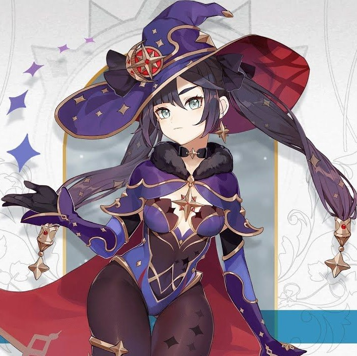

MONA
A mysterious young astrologer who proclaims herself to be "Astrologist Mona Megistus," and who possesses abilities to match the title. Erudite, but prideful. Though she is often strapped for cash and lives a life of thrift, she is resolved to never use astrology for profit... It is this very resolution that has caused her to constantly fret about money.
Mona is unique among astrologers — others may speak with great ostentation for money, but Mona has never done so. Nor does she dress up or mince her words, even if her results are unpleasant to hear: "You won't amount to anything even if you join the Adventurers' Guild." "You've got no chance with him. In fact, he will soon leave you" — such is the nature of her rejoinders.
Mona's astrology utilizes hydromancy, and she once explained the underlying principles thusly:
"It is people's fate that shines in the night sky, and though its reflection in water is but an illusion, it reveals the truth nonetheless."
No-one else can quite comprehend this principle, but Mona's ability convinces people to believe in it anyway.
Albeit, sometimes grudgingly...
Her astrological readings are exceptionally precise, and she will neither lie nor hold anything back when revealing the results of her readings.
"Your son says that he's made it. That's a lie."
"You've got no chance with him. In fact he will soon leave you."
The cold, hard truth is laid bare before people's eyes, complete with all the grisly details that they would rather remained buried.
Mona will make no exceptions to this, and as such she can seem completely lacking in human emotion.
But sometimes, on a clear night, she can be seen on a high mountain slope.
There, Mona gazes up at the stars in the sky — so close, she feels, that she could almost reach out and touch them — with gentle eyes, humming an unknown tune to herself.